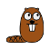

|  |
The small3d library
|
On MacOS, the small3d unit tests and sample game can be built from the command line, just like on any other platform. However you might want to create an Xcode project, in order to use the Xcode debugger for example.
First of all, after the dependency preparation script (deps/prapare.sh in this case) has been executed, small3d together with its unit tests can be configured and built for Xcode as follows (execute from the main directory):
mkdir build cd build cmake .. -G"Xcode" cmake --build .
The created project, build/small3d.xcodeproj can then be opened in Xcode.
There are two things that need to be taken care of before proceeding to run and debug the unit tests though. First of all, from the Project Navigator, click on small3d, and then on the unittests target. Select Build Settings and scroll down to User-Defined. There, the CONFIGURATION_BUILD_DIR variable needs to be set to the bin directory in all cases, for example /Users/me/Source/small3d/build/bin/, rather than the differentiated directories it is set to by default, e.g. bin/Debug, bin/Release, etc.
The other problem is that, if you have set some Vulkan-related environment variables in bash / zsh, Xcode is not aware of them. Select the unittests target and then select Edit Scheme. Then select Run Debug, Arguments and add the necessary Environment Variables. They cannot be exactly the same as in .zprofile or .bash_profile. For example VULKAN_SDK does not need to be defined in this case and its value cannot be reused as $VULKAN_SDKanyway. They should look somewhat like these (note that, in my case, I do not install the Vulkan SDK. I just unzip it in my Software directory. So your specific path locations may vary):
PATH=$PATH:/Users/user/Software/vulkansdk-macos-1.2.154.0/macOS/bin DYLD_LIBRARY_PATH=$DYLD_LIBRARY_PATH:/Users/user/Software/vulkansdk-macos-1.2.154.0/macOS/lib VK_LAYER_PATH=/Users/user/Software/vulkansdk-macos-1.2.154.0/macOS/share/vulkan/explicit_layer.d VK_ICD_FILENAMES=/Users/user/Software/vulkansdk-macos-1.2.154.0/MoltenVK/dylib/macOS/MoltenVK_icd.json